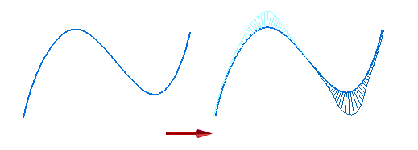

Show Curvature Comb command
Use the Curvature Comb command to switch on or off the display of the curvature comb for a curve. The curvature comb shows the smoothness of a curve.

Curvature combs help you determine how quickly or gradually curves change and where they change direction. You can use the curvature comb to quickly determine the feasibility of machining and to predict the aesthetic qualities of surfaces generated from a curve.
If you have a curvature comb displayed and use dynamic edit to make changes to the curve geometry, the comb updates immediately to reflect the changes.